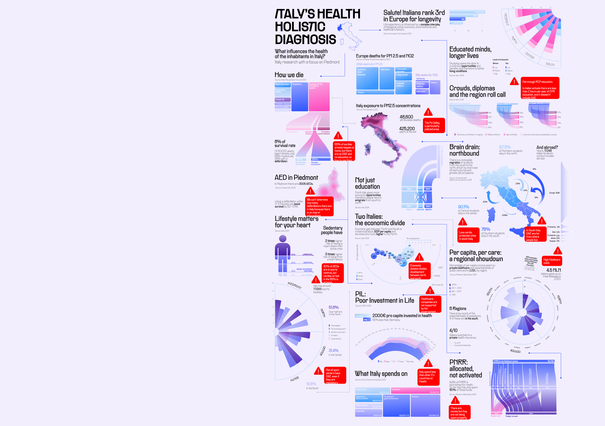
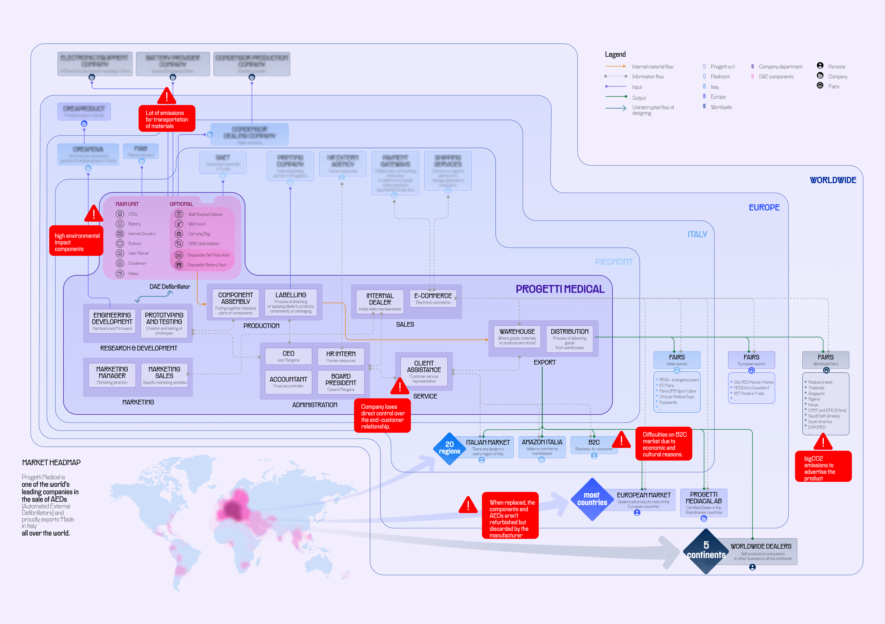
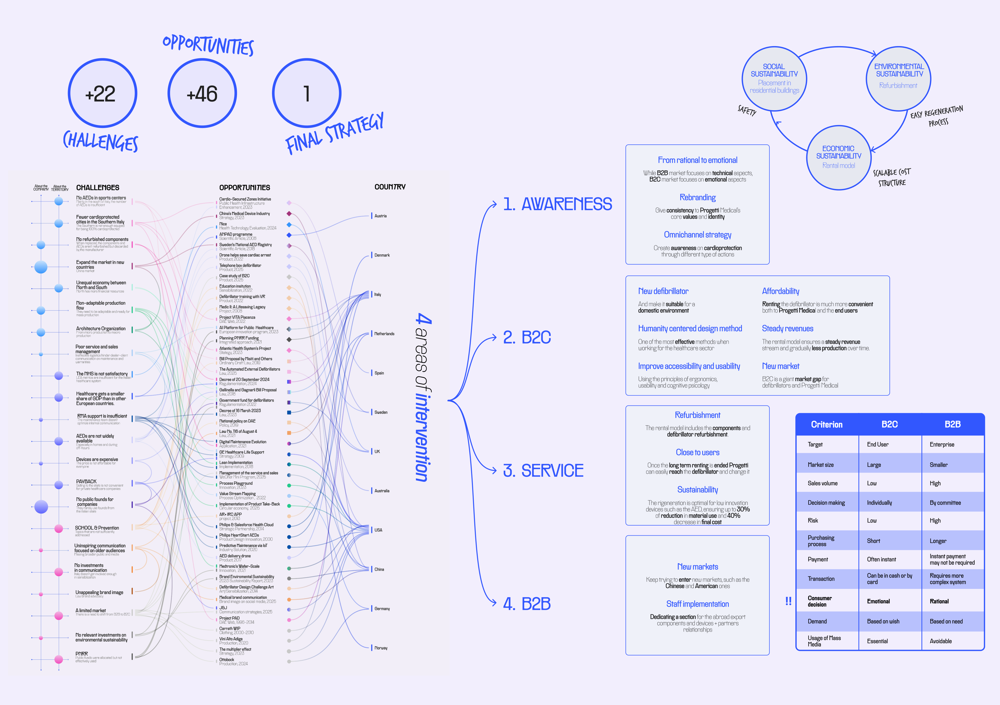
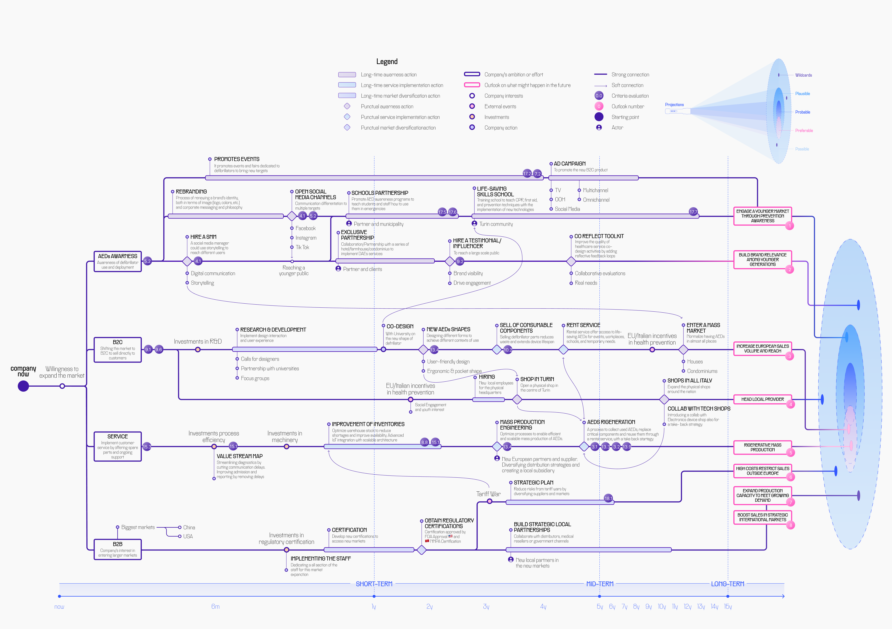
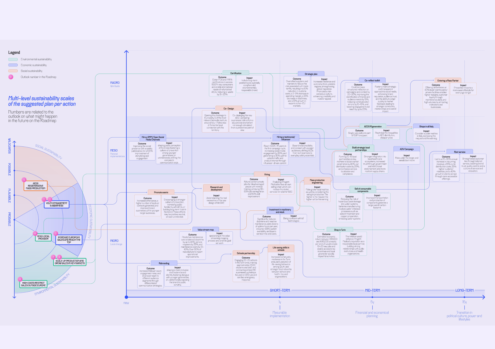
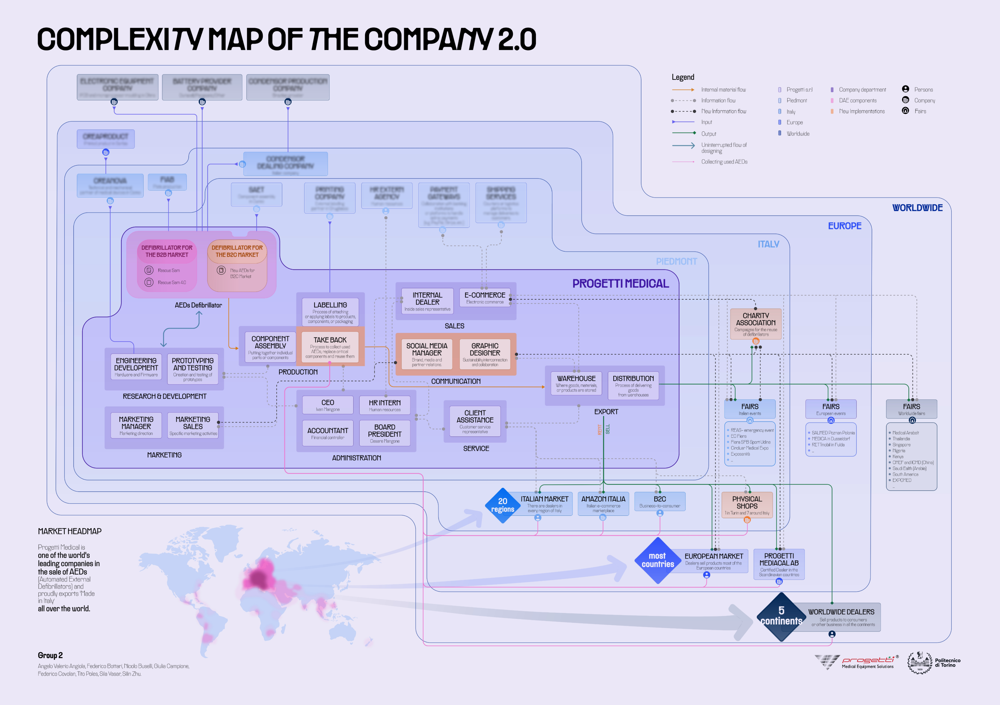

Systemic & Strategic Design · 2025
Progetti Medical
Defibrillators in residential buildings — a strategy to fight cardiac arrest
Conducted for the Open Systems course at Politecnico di Torino in collaboration with Exclusive Brands Torino (EBT), the project focuses on a systemic analysis of Progetti Medical to enhance the quality of relationships within its network.
Applying a Systemic Design approach, the research moves beyond individual product logic to a Holistic Diagnosis of the enterprise — identifying hidden resources and potential circularities in the high-end medical sector.
Open Systems principles are used to map flows of matter, energy and information, transforming traditional waste into new opportunities for value creation — strengthening the bond between medical innovation and the Piedmontese territory.

Section 01 · Research
Diving into the system — 22 challenges, 46 opportunities.
Through cross-sectoral synergies within the EBT ecosystem, the project proposes a Systemic Model that fosters local development and environmental resilience — ensuring Progetti Medical's excellence contributes to a self-sustaining business habitat.
The research identified +22 challenges, +46 opportunities and 1 final strategy, leading to four areas of intervention.


Section 02 · Strategy
Four areas of intervention.
1 · Awareness. From rational to emotional. While B2B markets focus on technical aspects, B2C focuses on emotional ones — a rebrand gives consistency to Progetti Medical's core values, with an omnichannel campaign building awareness on cardioprotection.
2 · B2C. A new defibrillator suitable for domestic environments. Humanity-Centred Design improves accessibility and usability through ergonomics, usability and cognitive psychology.
3 · Service. A refurbishment-first rental model. Once a long-term rental ends, Progetti retrieves and regenerates the device — optimal for low-innovation devices like AEDs, ensuring up to 30% less material use and a 40% lower final cost.
4 · B2B. Enter new markets (China, US) and grow the staff dedicated to export components and partner relationships.

Section 03 · B2C Model
A rental model at €24.99 / month.
The B2C Rental Model offers a flexible approach at €24.99/month over an 8-year life cycle, making defibrillators accessible to individuals and residential buildings without upfront costs. The model ensures steady revenues and gradually reduces production volumes over time.
In Turin alone there are 323,823 residential buildings, with ≈ 32,382 condominiums representing a 12% market target for the pilot launch. The 4% annual growth forecast is based on company performance 2018–2023, excluding the COVID sales spike. Net profit grows with sales but stays flat in year one due to investments in the new device and awareness campaigns.

Section 04 · Company 2.0
Redesigning the Progetti Medical company process.
Company Map 2.0 represents the strategic evolution of the Progetti Medical ecosystem. Building on the Holistic Diagnosis, it outlines the transition from a linear model to an open and resilient system — integrating hidden resources and designing new circular flows of matter, energy and information.
The result is an industrial ecosystem where technological excellence in the biomedical sector acts as a driving force for regional development and systemic sustainability.
